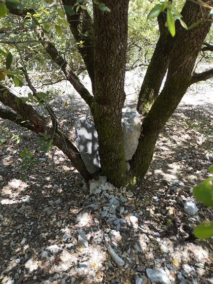
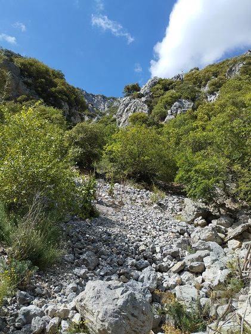

Saint Martin Lys - Gal - les berges de l'Aude
Coin de verdure au milieu des gorges

Que fait ce rocher au milieu des arbres ?

Un hippopotame dans l'Aude ?
Une sirène dans l'Aude ?
Que fait cette borne arrachée ? A quoi a-t-elle servi ?
Commentaires
Cliquer ici pour faire un Commentaire
Retour à l'accueil Précédent Suivant